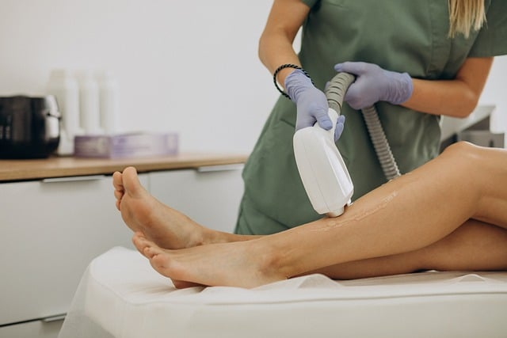

JOURNAL / Depilação a laser
Depilação a laser: quais medicamentos e produtos informar?
Leve à avaliação uma lista de medicamentos, suplementos e produtos usados na pele. Saiba o que registrar e por que não interromper nada por conta própria.

Por que a lista faz parte da avaliação
Alguns medicamentos, produtos tópicos e suplementos podem ser relevantes para uma avaliação de laser. A American Academy of Dermatology recomenda informar o profissional sobre medicamentos prescritos e sem receita, incluindo isotretinoína, além de fatores como bronzeamento recente e tendência a cicatrizes.
Isso não significa que todo medicamento impeça o tratamento. A relevância depende do produto, da condição tratada, da área, da pele e do aparelho e protocolo propostos. A lista permite que a profissional avalie o caso e consulte orientação específica quando necessário.
O que anotar antes da consulta
Registre o nome do medicamento ou produto, a dose ou concentração se souber, como é usado e quando começou ou mudou. Inclua medicamentos prescritos, os comprados sem receita, vitaminas e suplementos, cremes, ácidos e outros produtos aplicados na área que se pretende tratar.
Anote também alergias ou reações anteriores, tratamentos recentes, bronzeamento ou queimadura solar próximos da data e o motivo de uso de medicamentos relevantes. Se não souber o nome exato, leve a embalagem ou uma foto legível do rótulo. Não precisa decidir por conta própria se algo é “fotossensibilizante”; compartilhe a informação para revisão.
Não suspenda uma medicação para “liberar” o laser
Não interrompa, reduza ou altere medicamento prescrito, isotretinoína, anticoncepcional ou qualquer outro tratamento por causa de uma sessão estética sem falar com quem o prescreveu. A profissional que avalia o laser pode recomendar adiar ou pedir esclarecimento, mas mudanças no tratamento de saúde devem ser discutidas com o prescritor.
Se um produto tópico for considerado relevante, peça instruções específicas sobre se deve ser pausado, em qual área e por quanto tempo. Não aplique uma regra encontrada para outro aparelho, outro procedimento ou outra pessoa.
Perguntas que deixam a decisão mais clara
Pergunte: qual informação do meu histórico influencia esta avaliação? O modelo e a modalidade de laser propostos têm orientação específica para algum dos itens da lista? Se a sessão precisar ser adiada, quem devo consultar sobre a medicação? Quais instruções por escrito devo seguir para a área tratada?
A página do serviço identifica o LightSheer Duet, mas não publica uma lista local de medicamentos que exija pausa nem um protocolo individual. Essa confirmação deve ocorrer na avaliação, com base no aparelho, no histórico e na orientação do prescritor quando necessário.
Fontes e limites
Estas referências dermatológicas apoiam levar à consulta um histórico completo de medicamentos e produtos para a pele. Não definem o protocolo do LightSheer Duet da clínica, não estabelecem escopo profissional local e não orientam interromper medicamentos.
- American Academy of Dermatology: preparo para depilação a laser
- American Academy of Dermatology: medicamentos e produtos tópicos antes de laser/luz
Peça à profissional que confira a orientação atual do aparelho e combine qualquer mudança de medicamento com o prescritor.
Vamos conversar sobre o seu cuidado?
Leve suas dúvidas para uma conversa individual com Franciele Sofiati. A avaliação considera sua história e o que faz sentido para você.